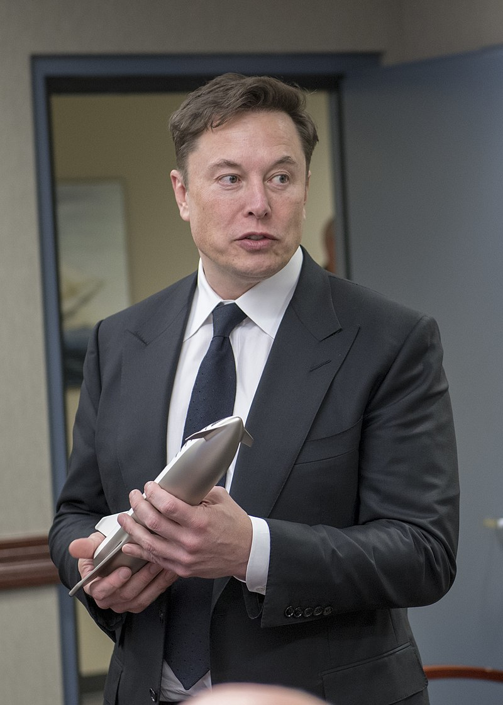

Биография
Ранние годы
Родился 28 июня 1971 года и вырос в Претории (ЮАР) в семье инженера Эррола Маска и его жены, модели Мэй Маск (урожденной Халдеман). Родители дали ему имя прадеда Джона Илона Халдемана, который родился в 1872 году. Халдеманы — предки его по материнской линии — из швейцарских немцев. Они иммигрировали из Европы в Нью-Йорк во время Войны за независимость США, откуда впоследствии разъехались по Среднему Западу. В 1948 году дед Маска Джошуа Норман Халдеман женился на канадке, учительнице танцев Уиннифред Жозефин Флетчер (Уин). В этот же год у четы родились дочери-близнецы Кэй и Мэй, мать Маска. Дед Маска был заядлым авиатором, путешествовал со всей семьёй на собственном одномоторном самолёте по Северной Америке. В 1950 году жажда приключений заставляет семью покинуть Канаду и перебраться в Южную Африку, где Мэй в 15 лет поступает в школу моделей и начинает выходить на подиум, фотографироваться для журналов и даже становится финалисткой конкурса «Мисс Южная Африка». Мэй и её будущий муж Эррол Маск, отец Илона, выросли вместе в одном районе[13]. Эррол работал инженером строителем, а Мэй была практикующим диетологом. У Илона есть младший брат Кимбал и младшая сестра Тоска. Мальчик рос замкнутым, любил чтение и, имея фотографическую память и прочитав два комплекта энциклопедий, стал всезнайкой, что не прибавило ему популярности. В школе Илон подвергался насилию со стороны сверстников; после одного из избиений ему пришлось восстанавливать сломанный нос. Родители развелись, мать уехала с детьми в Дурбан, но через пару лет Илон решил жить с отцом, к которому впоследствии перебрался и Кимбал. Эррол — тяжёлый, требовательный человек, и жить с ним было нелегко, но мальчики многому научились у отца. Они приходили к отцу на работу класть кирпичную кладку, устанавливать сантехнику, подгонять оконные рамы и прокладывать электропроводку. В возрасте десяти лет Илон получил в подарок свой первый компьютер Commodore VIC-20 и научился на нём программировать. В двенадцатилетнем возрасте он продал за 500 долларов свою первую программу — видеоигру в стиле Space Invaders под названием Blastar[17], в которой игрок обстреливал ряды инопланетян из лазерной пушки[18]. Маск вкладывал средства в акции фармацевтической компании, за которой следил через газеты. На вырученные от продажи акций несколько тысяч долларов он, вопреки протестам родителей, уехал в Канаду. До поступления в университет он жил у родственников в городе Кингстон, провинция Онтарио. Поступил в университет Куинс в Кингстоне, где обучался с 1989 по 1991 год. Затем перевёлся в Пенсильванский университет, чтобы изучать бизнес и физику. Получил степени бакалавра экономики и бакалавра физики. В 1995 году поступил в Стэнфордский университет, чтобы получить PhD в прикладной физике и материаловедении. Однако его поступление совпало с интернет-бумом, и он покинул Стэнфорд всего через два дня, чтобы принять в нём участие, запустив свою первую компанию, Zip2 Corporation.
Личная жизнь
Первая жена, Жюстин Уилсон, училась с ним в одном университете в Канаде. Они поженились в 2000 году, и у них родилось пятеро детей.В сентябре 2008 года Илон и Жюстин объявили о разрыве отношений, поскольку Маск стал встречаться с британской актрисой Талулой Райли. Они поженились в 2010 году. В 2012 году Маск и Райли развелись, однако поженились снова в 2013 году. В марте 2016 года они подали заявление на развод, который состоялся в октябре того же года. Илон Маск признался, что испытывает проблемы со сном и употребляет снотворное «Эмбиен» (золпидем). Около года встречался с актрисой Эмбер Херд. Маск объяснил в инстаграм-комментарии, что причиной их расставания стали плотные рабочие графики и отношения на расстоянии, но он и Херд остаются друзьями. В феврале 2020 бывший муж Эмбер Херд, Джонни Депп, заявил, что Херд начала изменять ему с Маском спустя месяц после свадьбы. В деле имеются показания свидетелей, заявлявших, что Маск не раз посещал пентхаус Херд в отсутствие её мужа. Суд потребовал от Илона Маска предъявить всю личную коммуникацию с Херд, чтобы изучить обоснованность этих обвинений. Представители бизнесмена выпустили заявление с опровержением и утверждением, что отношения оставались дружескими до официального развода Херд и Деппа. Известно, что Маск является одним из свидетелей со стороны Эмбер Херд в деле о домашнем насилии. С 2018 года встречается с канадской певицей и музыкантом Клэр Буше, более известной как Граймс. В январе 2020 Граймс подтвердила, что они с Маском ждут первенца. Граймс пояснила, что ребёнок сам сможет выбрать себе гендер и пара планирует использовать в отношении ребёнка нейтральное местоимение «они». Первенец пары родился 4 мая 2020; со слов отца, его зовут «X Æ A-12», хотя в Калифорнии это имя может быть незаконно, поскольку в нём есть символ, который не является английской буквой (Æ). Примерная транскрипция — «Экс Эш Эй-Твелв». Младший брат Илона, Кимбал, является успешным ресторатором, адептом использования фермерских продуктов, а сестра Тоска занимается продюсированием кино. Мэй Маск, мать Илона, также является достаточно известной публичной персоной, успешной моделью, лектором и диетологом.
Увлечения
Маск владел самолётом Aero L-39 Albatros чехословацкого производства.
Позже он купил реактивный самолёт Dassault Falcon 900 из фильма «Здесь курят».
После продажи Zip2 в 1999 году Маск купил суперкар McLaren F1, но разбил его уже в следующем году, когда вместе с ним ехал Питер Тиль.
В октябре 2013 года Маск выкупил на аукционе за 997 тысяч долларов автомобиль-подлодку Wet Nellie из фильма 1977 года о Джеймсе Бонде «Шпион, который меня любил».
Участник полётов проекта Zero Gravity (достижение состояния невесомости на борту самолёта).